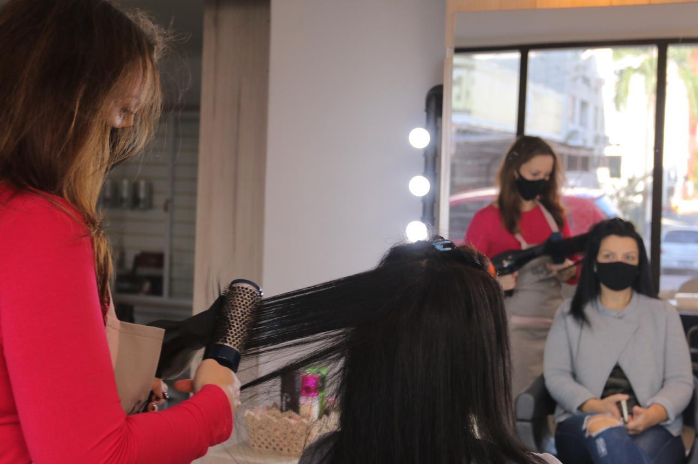

Fotos: Clóvis PerozinFotos: Clóvis Perozin
Fotos: Clóvis PerozinFotos: Clóvis PerozinTer o próprio negócio e se dedicar ao que realmente gosta de fazer foram as motivações que levaram Anamaria de Oliveira abandonar a carreira de professora para abrir um salão de beleza. Faz 18 anos que ela tomou a decisão e hoje atua como cabeleireira em Criciúma, no Sul de Santa Catarina. Como para muitos empreendedores, a pandemia do novo coronavírus também trouxe dificuldades para Anamaria. No momento mais crítico, a ajuda veio em forma de empréstimo a juro zero, junto ao Governo do Estado.
A empreendedora, que estava perto de fechar as portas do próprio negócio, conseguiu continuar trabalhando.
A batalha para manter o sonho profissional levou em conta muito trabalho e esforço. Anamaria começou o pequeno negócio atendendo amigas, depois do turno de trabalho das aulas. Foi tomando cada vez mais gosto pela profissão e resolveu se formalizar como MEI, alugando um espaço para apostar 100% no novo ofício.
Com a pandemia, veio também um dos períodos mais angustiantes, quando viu as contas se acumularem. Foi aí que decidiu mais uma vez não desistir. A estratégia foi reduzir a despesa com o aluguel onde estava há 18 anos. Na busca por crédito, bateu em várias portas, sem sucesso, até que conheceu o Programa Juro Zero.
“Com dificuldade de pagar o aluguel onde estava, tomei a decisão de locar outro espaço, mas não tinha dinheiro pra mudar, até que soube desse empréstimo sem nada de juros. Eu nem acreditei, já tinha ido a bancos e os juros eram bem abusivos”, conta ela.
Para Anamaria, o empréstimo de R$ 5 mil, sem encargos, foi fundamental para a virada de chave em um momento tão crítico. “Muito, muito válido. Sem isso, acho que eu teria fechado as portas”, avalia.
A vitória da cabeleireira Anamaria é também motivo de esperança e de aposta na retomada econômica de Santa Catarina pós-pandemia. Assim como ela, milhares de catarinenses continuam tocando seus negócios, tomando todos os cuidados com os protocolos sanitários de prevenção à Covid-19 e movendo a economia do estado em diferentes setores.
Na indústria, por exemplo, indicadores mostram que, em julho, o crescimento em Santa Catarina foi de mais de 10%, acima da média nacional e o maior da Região Sul. No comércio não foi diferente. As vendas catarinenses tiveram crescimento em maio (23,8%), junho (5,7%) e julho (3,5%). Resultados assim evidenciam a força e o trabalho de todos que vivem no estado, mesmo nas adversidades.
“Há momentos em que a gente precisa acreditar ainda mais, acreditar que tudo vai dar certo. Principalmente diante desta pandemia, estar bem de saúde é o maior presente e poder continuar trabalhando é se sentir vivo, é sentir que as coisas podem e irão melhorar”, conclui a empreendedora catarinense.
ECONOMIA |
|---|
| - Mais de R$ 23 milhões em empréstimos e pelo menos 5 mil operações por meio do Programa Microcrédito Juro Zero entre abril e julho. O programa teve 53% de aumento no valor disponibilizado em relação a 2019 |
| - O Badesc contratou R$ 123,3 milhões em crédito para empreendedores de março até setembro. O valor beneficiou 505 negócios, sendo 453 micro e pequenas empresas |
| - Dos R$ 100 milhões disponibilizados pelo BRDE, aproximadamente R$ 75 milhões já foram contratados. Isso significa mais de 850 empresas beneficiadas até o momento. A estimativa é que esse recurso ajudou a manter mais de 10 mil empregos |
| - Serviços e protocolos digitais para atender população e empresas |
SEGURANÇA |
|---|
| - Mais de 210 mil fiscalizações para verificar cumprimento das normas estabelecidas |
| - Sistema online para triagem da Covid-19 |
| - Segunda via rápida de carteira de identidade com mais de 500 confecções por dia |
| - Ampliação e melhoria do atendimento da delegacia virtual, com 71,6% dos registros de boletins de ocorrência feitos pela internet |
A escola vai até os alunos para levar conhecimento e carinho

Mais de 500 mil produtores rurais se adaptam para garantir o cultivo

Catarinenses superam a Covid-19 e fortalecem laços
Empreendedores se adaptam e Governo auxilia empresas a atravessarem momento desafiador

A rotina de quem se dedica a salvar vidas em meio à pandemia